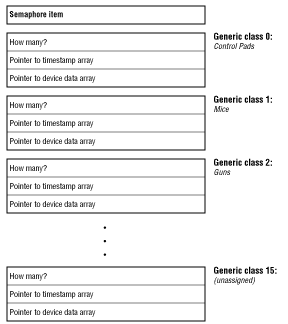
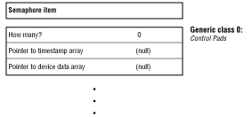
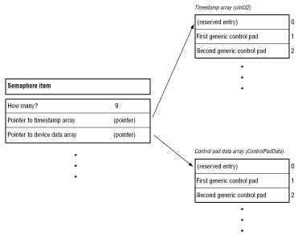

The pod table is an alternative method for accessing the current position of devices such as the analog joystick and light gun, with substantially lower overhead for both the application and the event broker. This table (actually a set of arrays and data structures) contains the current position information, and current button-state, for up to eight generic control port devices in each family. By examining the contents of the pod table, applications can track device position whenever it is convenient for them to do so.
EB_MakeTable.
The event broker builds the table and replies to the application's message by sending an EB_MakeTableReply message whose data structure includes a pointer to the table. The table is updated whenever new data arrives from the control port. An application that gains access to the table in this fashion can "poll" the contents of the table at its convenience. The table contains a semaphore that the application must lock to ensure the event broker does not update the table while the application examines it.

Figure 1: Pod table structure fixed-size and fixed-format section.
The table begins with a semaphore item. It is followed by a total of 16 almost-identical substructures: one substructure per generic class, with the names of the substructures indicating the generic class to which they refer. Within each substructure are two pointers: one to an array of uint32 timestamps, and another to an array of generic-class-specific event data structures. Each substructure also contains a uint32 "how many" field that gives the number of elements in the event and timestamp arrays. The "how many" field can contain 0, in which case the two pointers will contain NULL.
The event data structures used in these arrays are the same ones used to send
information in a normal event broker event frame. For example, the substructure
for generic class 0 (control pads) contains a pointer to an array of
ControlPadEventData structures, and the substructure for generic
class 8 (analog joysticks) contains a pointer to an array of StickEventData
structures.

Figure 2: Pod substructure.

Figure 3: Generic class substructure.
The "how many" field does not necessarily contain the number of devices of a generic class that are currently attached to the system; rather, this field identifies the sizes of the data arrays. Normally, the event broker will reserve sufficient space in the arrays for up to eight devices in each class, and the "how many" field will reflect this fact. If your application needs to get a complete and accurate listing of the devices currently attached to the system, it should use the EB_DescribePods message to ask the event broker for a current list.
The entries in the timestamp and device-data arrays should be accessed with a starting index of 1. That is, the data for the first generic joystick will be found in StickEventData[1]. This ensures that the numbering scheme for these arrays matches the generic-device numbers in the event broker's event-frame and pod-description messages. Entry 0 in each array is reserved for future use, and should not be accessed by applications.
The values in the timestamp arrays are standard Portfolio VBL counter timestamps. They have a resolution of 1/60th of a second on NTSC systems and 1/50th of a second on PAL systems. They are derived from the same source as the event timestamp values in an event broker event message, and also correspond to the VBL-count times applications read using the timer device.
If a controller is unplugged from the control port, the event broker ceases updating its entries in the pod table. An application can detect stale information by checking to see if the validity timestamp is changing.
A substructure goes from empty to nonempty if a device of an as yet unseen generic class is connected to the multiplayer, and a driver for this device is available. The array pointers in a substructure can be changed if the event broker needs to enlarge the arrays to support a larger number of devices than expected. In any case, a change in the table's structure will occur only when the event broker has locked the semaphore on the pod table. Applications are urged to lock the semaphore before accessing the contents of the table, and unlock it immediately afterwards, to avoid having data in the table change while the application is reading it.
The pod table mechanism is intended to give applications a way to view the most recent information for each control port device on the system. As such, it lets you track a light gun's target position or the offset of an analog joystick with very little effort and overhead. You may be tempted to use it for other, less appropriate purposes: for example, to detect button-down and button-up interactions at the control pads or light gun or analog joysticks. Do not do this. It can cause compatibility problems, now or in the future.
You can also get into trouble because an application has no guaranteed way of knowing just when the data in the pod table is likely to be changed. If somebody taps and releases a button on the control pad very quickly, it is possible for the pod table to be updated twice (reflecting both the button-down and button-up changes) before your application gets around to polling it. As a result, your application will never notice this particular button-press, and it will not react to the user's action.
Pod Table Polling
You may think that you can avoid this problem by polling the pod table frequently, perhaps once per field (60 times a second on an NTSC machine). That might work today, but it might not work tomorrow. Future versions of the 3DO hardware and software may scan the control port more frequently than today's version to reduce the delay between the time a button is pressed and the time a program reacts to it. In fact, this is very likely. If your application depends on polling the pod table more rapidly than the event broker can update it, it will probably not run reliably on some future 3DO hardware.
Polling the pod table frequently adds quite a bit of overhead and complexity to an application. You will either have to interrupt your main-line code several times per field to poll the table (making the code bigger and bulkier) or it will be necessary to have a code thread wake up every few milliseconds to check the table (thus adding more overhead than the pod table mechanism eliminated, and slowing down your application's frame rate). You might be tempted to start writing "busy/wait" polling loops to wait for events; these would make your program multitasking-hostile and network-unfriendly.
The event broker's event message system was designed specifically to eliminate such problems. The event broker is a couple of steps closer to the hardware than your application is, and takes advantage of this fact. It does all of the button-down/button-up detection for you. Every time new data arrives from the control port it can queue up several event messages in a row for your application without losing any data, and it will wake up your program or thread (sending a message) when an event arrives.
The best way to use the pod table is to use it only to keep track of position information (analog joystick-position, mouse offset, light gun target pulse count, and so on.). For all real user-interaction events (button-down, trigger pulled, and so on), use the event broker event message mechanism.
It is tempting to not lock the semaphore and read the tables directly. This is dangerous, as you might get inconsistent data within the table. It might also lead to crashes if new controllers are plugged into the system and the event broker must alter table pointers.
Finally, since the array pointers within the pod table can change from event to event, it is important not to cache these values anywhere. Whenever you lock the pod table semaphore, you must sample the array pointers from the table.
However, if you are checking timestamps in the event messages, and are also looking at timestamps in the pod table, you should be cautious. It is possible for you to receive an event message (containing a timestamped event), look in the pod table, and find that the timestamp for the corresponding device does not match the one in the event message. This can (and often will) happen because the pod table was updated between the time that the event message was sent to your application, and the time that your application processed it. The pod table timestamp will usually be more recent than the event frame timestamp.
This might cause some confusion if, for example, an application tracking the light gun cursor based on pod table information but the application was "firing bullets" based on the event messages. The application might mistakenly shoot a bullet at the position the gun was aimed before or after the moment the trigger was pulled, rather than where it was aimed at the precise moment of firing.
All of the information in any particular event frame has the same timestamp. For example, if your application receives a "light gun button down" event frame, then the button-bits and the light gun counter in that event frame were sampled at exactly the same moment. Your application should fire at the spot indicated in the event frame, rather than at the (possibly different) location currently indicated in the pod table.